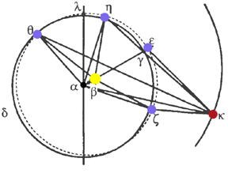

Chapter 24
Watching the earth from Mars
Close one eye and keep it closed.
Now walk around a little, or, if you're sitting down, at least move your head around while looking at nearby objects.
Now stay still, moving your one eye in its socket to look around you, but without moving your head. Can you tell how far away things are from you with one eye in a stationary head?
Now, open your other eye, and move your eyes to look around, but without moving your head. Do you feel like you just put on 3D glasses?
It is much easier to gauge distances when you are either moving yourself (parallax), or using both of your eyes (binocular vision). Each eye sees things differently, and your relationship to the things around you changes as you move around.
Kepler applied this binocular-parallax principle to astronomy, to overcome one of the greatest difficulties of determining the orbit of the earth, which is that we're standing on it! How can you determine how you are moving? It would be much easier if you could watch yourself from another point of view or two, wouldn't it? We applied this to Mars already, when, to observe Mars without the complication of our changing position, we "stood" on the sun by taking observations at opposition.  Now, in Part III, we will watch the earth from Mars, without leaving the comfort of our terrestrial sphere. To accomplish this, Kepler, using the time of Mars's orbit around the sun of 687 days (approximately), looked for observations of Mars taken 687 days apart. Since Mars is in the same place in these observations, we can, through the principle of inversion, watch the earth from two stationary points (the Sun and Mars) to determine the shape of earth's orbit -- ingenious!
(One more way to test out the absence of binocular vision: trying to catch fireflies at night with one eye closed!)
In the diagram from the chapter, Kepler assumes the angles around α (θαη, ηαε, and εαζ) are equal, since they are equally spaced in time, and α is the point of uniform motion. Based on this assumption and the observations, Kepler uses the law of sines to determine the lengths of the lines from α to the earth. For example, he finds that in triangle αεκ, angle εκα opposite side αε is 42°21'30" and angle κεα opposite side ακ is 96°22'14". Using the law of sines and setting ακ = 100,000, we find that αε is 67,794. Here are all the lengths:
αθ = 66,774
αη = 67,467
αε = 67,794
αζ = 67,478
These lengths are unequal, proving that α cannot actually be the center of earth's orbit.
Therefore, the circle δγ, which Copernicus described about the point α of uniformity of the earth's motion, is not the earth's path. There is instead some other circle θηεζ [dashed in the diagram] on which the earth is found, whose center lies in the same direction as the sun -- that is, at β. (p.319)
| Next |